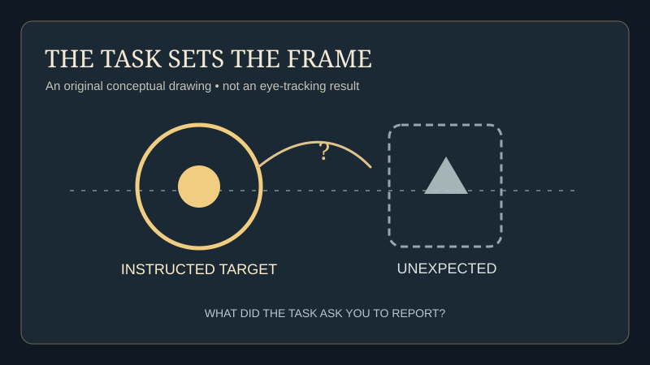

Final Vestige Studios · Mind & Perception · Unpublished independent buyer guide
Twelve minutes of listening. But what exactly are you buying?
You have twelve minutes before the next obligation. Sitting silently feels harder than pressing play. A packaged meditation audio program sounds like a practical answer. The important question is not whether the sales page makes that feeling vivid. It is whether the specific product, at the specific checkout, offers value you can verify.
Editorial draft checked 18 November 2026 · Seller-described formats, not personal product testing · No price, approval, earning link, testimonial or guaranteed outcome asserted
The real problem: friction, not a defective mind
If you can commit to a small period of quiet time but have trouble deciding what to do during it, guided audio may provide useful structure. If you dislike spoken prompts, a music or nature track may be more appealing. If you prefer silence, a timer already provides the essential twelve-minute boundary without a purchase. The practical comparison is about format, convenience and preferences—not an unverified promise to change your brain automatically.
In Final Vestige's live investigation of change blindness, people can miss major changes during demanding visual tasks. In research on the invisible gorilla, attention to a monitoring task can make unexpected objects go unreported. Those scientific findings motivate curiosity about attention. Neither experiment tested Zen12, meditation audio, or an individual reader's need for a product.
The seller-described Zen12 format
According to Zen12's own About page, this is a meditation-audio program built around twelve-minute sessions, twelve progressive levels and four listening styles at each level. It describes guided, music, natural-sound and other listening variations. The seller's standard program and a separate promotional checkout present different packages. These statements establish what the merchant advertises, not independent validation of its effectiveness, current price, refund eligibility or purchased contents.
| Question | What can be said now | What must be independently verified |
|---|---|---|
| Session length | Seller advertises twelve-minute audio sessions. | Actual files and playback options for the precise SKU. |
| Library | Seller advertises twelve levels with four styles each. | Whether the exact checkout includes all levels and any additional materials. |
| Experience | Guided or non-guided formats may be a preference fit. | Audio samples, language, devices, download method and use limits. |
| Benefits | Seller claims automatic relaxation and brainwave effects. | Independent product-specific trials; not established by the cited literature. |
| Money | No enduring, verified price or refund entitlement established. | Live SKU amount, currency, checkout tax, guarantee, exceptions and contact process. |
| Affiliate terms | The network advertises an affiliate program generally. | Named Final Vestige approval, authorized tracking URL and channel permissions. |
A small experiment that costs nothing
Before paying for any routine, give yourself a fair, non-medical baseline. Choose a quiet and safe place. Set an ordinary timer for twelve minutes. You may sit, listen to ambient sounds you already have rights to use, or follow your own breathing at a comfortable pace. Do not do this while driving or operating equipment. When the time ends, note whether the time felt convenient, whether you enjoyed the format, and whether you would choose to repeat it. The point is to test your preference for a scheduled session, not to demonstrate a clinical result.
Repeat on a different day if you like. If a silent timer feels ideal, you may not need a paid product. If you want more structure, compare a freely available guided track with the seller-described options before making any purchase. Keep your baseline private; nothing needs to be submitted to us.
It is perfectly reasonable to buy convenience. It is not reasonable to pretend convenience proves a promised change in brainwaves, wealth, or health.
What the evidence can—and cannot—carry
An independent 2023 systematic review of fourteen EEG studies of binaural beats found five studies consistent with a brainwave-entrainment hypothesis, eight inconsistent and one mixed. Researchers reported substantial differences in methods, limiting a firm overall conclusion. Importantly, those studies did not test Zen12. A study of general meditation practice likewise cannot establish the effect of these particular MP3s, a claim that twelve minutes equals an hour, or a guaranteed change in anxiety, focus or cognitive performance.
Even if you like the audio, preference and outcomes are different claims. The seller might accurately describe its format without proving its strongest benefits. Final Vestige has not purchased or clinically tested Zen12 and does not endorse its efficacy. This guide is educational, not medical, mental-health or financial advice.
Six questions before you decide
- What is the precise package? Is the checkout the standard Zen12 library or a distinct limited promotional presentation? Confirm included MP3s and materials in writing.
- Will I actually use it? Test one free twelve-minute session first; consider a shorter guided free track if you want voice prompts.
- Do I like this format? A seller's level system does not establish that its musical styles, voice or delivery suit you.
- Are the claimed outcomes supported? Ask for independent studies testing the exact product and the same claimed outcome. Do not substitute general neuroscience.
- What if it does not suit me? Read the current checkout's full refund policy, eligibility, window, digital-download restrictions and support details before purchase. None is verified here.
- Who gets paid and how is my click tracked? Verify an authorized link, adjacent disclosure and the merchant's privacy/payment terms; Final Vestige cannot infer sales from clicks.
Optional visual explanation · 42-second concept, not hosted media
The question changes what you notice
Variant B adds a compact, original visual explanation. It is optional, never automatic, never required to read the guide, and makes no claim that the depicted perception research tests Zen12.
Open the 42-second storyboard, poster and complete transcript

Accessible transcript: “We search for what the task asks. Sometimes an unexpected detail is missed—even by experts in a carefully designed experiment. That is a finding about attention, not a diagnosis. It does not prove that a meditation audio improves focus. Before buying any listening program, try twelve quiet minutes, write down the result, and compare the seller’s exact package and limits. The choice is yours.”
Frame and caption timeline: 00:00–00:07 A task narrows attention; 00:07–00:14 An unexpected shape enters; 00:14–00:21 Looking is not always reporting; 00:21–00:28 A laboratory finding is not an audio test; 00:28–00:35 Try a free twelve-minute baseline; 00:35–00:42 Check evidence and exact merchant terms.
Video production handoff: original silent or narrated 960×540 H.264/WebM under an agreed performance budget; WebVTT captions; no cookies, autoplay, third-party embed, or tracking. Do not add a video element until a real source file is encoded and browser tested. This storyboard and full transcript remain available without JavaScript.
A/B hypothesis only: the optional original film could improve informed decision-making or could distract and reduce paid conversion. No visitor test or claim of uplift has been made.
Commercial review · Not yet available
An independent buyer decision, not a product endorsement
If you decide that a paid audio collection better suits your habits than a free timer, the next step would be to review the exact authorized Zen12 package, current merchant checkout, refund conditions and audio format before choosing. Final Vestige has not authenticated an affiliate relationship or an issued earning link for this offer.
Potential commission disclosure: If Final Vestige later becomes an approved affiliate and you purchase through an approved earning link, Final Vestige may earn a commission at no additional cost to you. No earning link is active in this draft.
This control is intentionally disabled. It cannot initiate checkout, redirect to the merchant or record an affiliate click. There is no fake countdown, invented discount, payment form or alternative affiliate redirect. No visitor should interpret this draft as an existing purchase opportunity.
An equally useful path that is free
Final Vestige's Seven Day Focus Fieldbook is a free 52-page reflection/planning resource with a twelve-minute starting routine and questions to evaluate audio marketing. It is delivered through the existing Dispatch/Jetpack subscription flow; there is deliberately no form or duplicated subscriber list on this page. If you do not wish to subscribe, you can still read this guide and the source references without providing an email address.
For historical perspective on suggestion and the ethics of testimony, read Puységur's Animal Magnetism Files. The eighteenth-century history of hypnotic suggestion is not evidence that a modern commercial track works.
Source notes and editorial boundary
The official Inspire3 catalog, standard Zen12 description, and distinct promotional offer were consulted for the exact seller presentation. A promotional coupon or countdown may change without notice; no such figure is repeated as a verified price here. General affiliate network language from Inspire3 Affiliates does not establish Final Vestige's approval. The FTC endorsement Q&A requires clear, conspicuous disclosure of material connections next to relevant links, and its health-claims guidance requires credible substantiation of health-related claims. We do not inherit unsupported merchant claims.
No product experience claimed. No commissioned sales claimed. No affiliate URL issued or activated. No additional email forms, cookies, third-party embeds, or analytics code. Source-only prototype; WordPress rendering, accessibility, pricing/returns, affiliate eligibility, legal review, video delivery and actual paid conversion are all unapproved/untested.